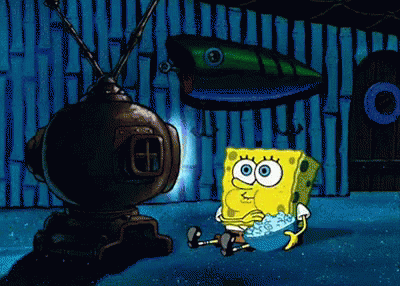

1. Membaca
Membaca merupakan sebuah aktivitas berupa melafalkan atau mengeja sebuah tulisan. Hal ini sesuai dengan yang
tertuang dalam KBBI (Kamus Besar Bahasa Indonesia) yang menyatakan bahwa membaca adalah
mengeja atau melafalkan apa yang tertulis.
Aku suka membaca karena menyenangkan. Banyak buku-buku bagus yang membuatku kagum. Aku suka buku fiksi
maupun buku non-fiksi. Buku fiksi yang kusukai antara lain, Buku-buku Harry Potter karya J. K. Rowling,
Sherlock Holmes karya Arthur Doyle , dan Percy Jackson karya Rick Riordan, ketiganya sama-sama bertema
fantasi dan novel terjemahan. Sementara Buku fiksi Indonesia yang pernah kubaca adalah Gebetan Instan karya
gari rakai sambu, beberapa buku kompilasi cerpen, dan sebuah novel tentang cinta yang telah kulupakan
judulnya.
Buku non-fiksi yang kusukai adalah Berani Tidak Disukai karya Ichiro Kishimi dan Fumitake Koga, Sebuah Seni
untuk Bersikap Bodo Amat karya Mark Manson, dan Sapiens karya Yuval Noah Harari. Banyak buku yang telah
kulupakan karena aku selalu meminjam buku-buku tersebut tanpa membelinya, sehingga kebanyakan buku hanya
kubaca sekali dan cepat kulupakan.
Selain membaca buku, aku juga suka membaca di internet. Aku sering baca-baca hal-hal yang berkaitan dengan
sains di internet. Aku juga suka membaca jurnal-jurnal terbaru tentang teknologi. Kadang-kadang aku juga
membaca artikel-artikel yang berkaitan dengan psikologi manusia. Aku juga sering membaca berita-berita bola
karena aku penggemar sepakbola.
2. Nonton
Selain membaca aku juga suka nonton. Entah itu film, series, anime, ataupun video youtube. Karena sangat
sulit untuk mengakses film-film maupun anime-anime lawas, dulu aku sering membajaknya dari internet. Namun
sekarang sudah banyak website yang menyediakan streaming anime secara legal dan langganan layanan film rumah
harganya semakin murah. Aku menonton film ketika punya waktu luang. Beberapa yang kusukai antara lain, The
Shawshank Redemption, The Dark Knight, Ingorious Basterds, dan film-film Mission Impossible. Untuk film
Indonesia, aku menyukai film-film Ernest Prakasa, film-film Raditya Dika, dan beberapa film komedi lainnya.

Aku juga suka menonton serial luar negeri. Serial yang paling kusukai adalah seri bertemakan kriminal yaitu
Breaking Bad. Seri ini menceritakan seorang guru kimia yang menjadi peracik narkoba jenis sabu-sabu. Ia
harus mencari uang sebanyak mungkin untuk kemudian diwariskan kepada keluarganya karena dia menderita kanker
parah dan umurnya tidak lama lagi. Selain itu aku juga menonton seri yang sangat populer yaitu Stranger
Things dan Lucifer. Stranger Things bergenre horor dan thriller sementara Lucifer bergenre komedi.
Aku juga sangat menyukai anime. Banyak sekali Anime yang sudah kutonton, hampir di setiap libur semester aku
menonton anime secara maraton. Terlebih lagi, sekarang banyak situs-situs yang mendistribusikan anime secara
resmi dan legal. Jika memilih mana anime yang terbaik, aku tidak bisa memutuskan, karena sebagian besar
anime menurutku kualitasnya sama. Sama-sama bagus dan menghibur.
Selain nonton-nonton yang bersifat rekreasi tersebut, aku juga sering nonton tutorial-tutorial dan info-info
seputar dunia komputer di Youtube. Selain bermanfaat entah kenapa kegiatan tersebut cukup menyenangkan. Aku
berlangganan beberapa channel tutorial programming yaitu Kelas Terbuka dan Web Programming Unpas. Selain itu
banyak film-film dokumenter di Youtube yang selain menghibur juga edukatif serta tentu saja gratis.
3. Bermain Gim
Aku suka bermain gim, walaupun belakangan tidak bermain sesering dulu. Bermain gim bisa sangat menghibur.
Saat kecil, gim yang pertama kumainkan adalah game Snake dan Space Impact yang ada di HP Nokia. Dulu, aku
juga punya consol yang disebut gamebot dengan game-game yang sangat sederhana jika dibandingkan game-game
jaman sekarang.
 Sekitar kelas 3 atau 4 SD aku mulai mengenal warnet, satu jam menyewa hanya kugunakan untuk bermain gim di
web games.co.id di situ ada bermacam jenis game mulai dari olahraga, memasak, perang dan seterusnya. Saat
kelas 5 SD aku mulai mengenal Play Station. PS2 lah yang booming di zaman itu karena harganya yang lebih
murah dibandingkan seri terbaru yaitu PS3. Setiap minggu aku pergi ke rental untuk bermain PS, kadang selama
2 jam, kadang juga 3 jam. Game yang kumainkan saat bersama teman selalu gim Winning Eleven. Saat sendiri aku
bermain GTA.
Sekitar kelas 3 atau 4 SD aku mulai mengenal warnet, satu jam menyewa hanya kugunakan untuk bermain gim di
web games.co.id di situ ada bermacam jenis game mulai dari olahraga, memasak, perang dan seterusnya. Saat
kelas 5 SD aku mulai mengenal Play Station. PS2 lah yang booming di zaman itu karena harganya yang lebih
murah dibandingkan seri terbaru yaitu PS3. Setiap minggu aku pergi ke rental untuk bermain PS, kadang selama
2 jam, kadang juga 3 jam. Game yang kumainkan saat bersama teman selalu gim Winning Eleven. Saat sendiri aku
bermain GTA.
Kemudian saat SMP, saat pertama kali aku memiliki smartphone android hingga SMA, aku suka bermain gim online
seperti Clash of Clans, Mobile Legends, dan Free Fire. Gim-gim tersebut, walaupun sangat mengasyikkan,
tetapi sangat menyita banyak waktu. Saat bermain gim-gim tersebut, tak terasa 6-8 jam telah berlalu. Hal
itulah yang membuatku merasa bersalah, tugas-tugas sekolah terbengkalai, kerjaan rumah ga dikerjain, bahkan
melakukan hal rekreatif lain pun jadi tidak punya waktu. Aku juga menjadi malas belajar di masa-masa itu.
Akhirnya aku memutuskan untuk tidak lagi bermain gim online yang sifatnya kompetitif. Saat ini, gim yang aku
mainkan bertemakan role playing game, bernama Granblue Fantasy, di mana banyak cerita di dalam game itu dan
pemain menjadi salah satu karakternya.